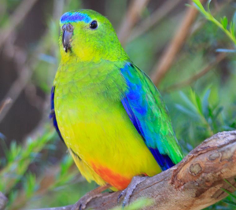

Page description

Orange-Bellied parrots are one of the lowest population bird species in all of australia with less than 100 recorded birds appearing since 2019.
Conservation efforts have seen increases in population every year, with tens of birds bred in captivity released every year during their migration
There are 5 birds directly monitored by the australian government, being the most at risk in the country.
This contrasts hugely with the 164 endangered birds listed in australia as vulnerable, endangered or critically endangered
a
This visualisation is created by Odin snowball. The datasources are The Australian threatened species index, Nothing yet.